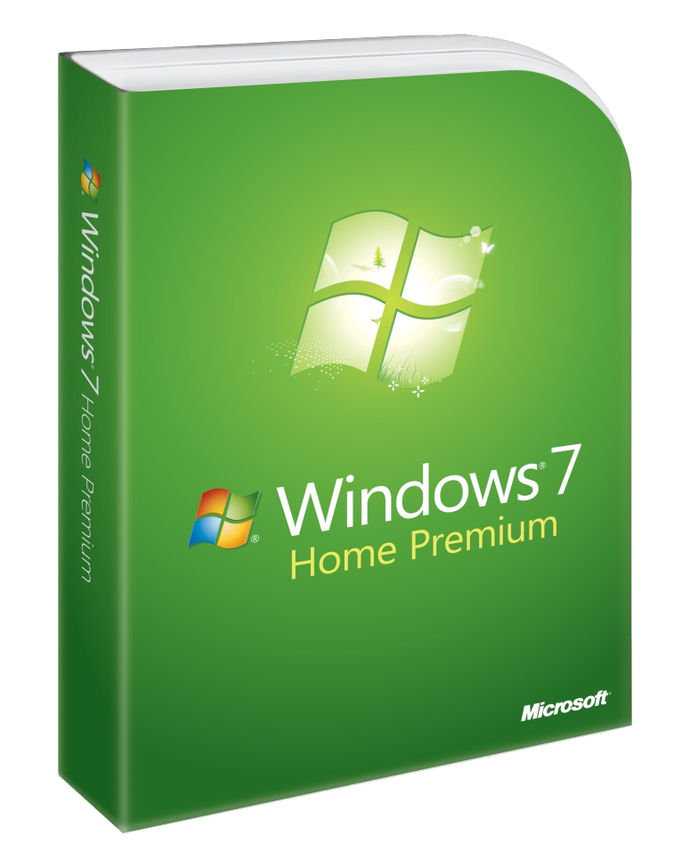

Windows 7 and Windows Phone 7

Windows 7 was released in 2009 and was designed to be more reliable, more responsive, and to make the things you did every day easier. Windows 7 continued the idea of having different versions of the operating system that were introduced with the previous version of Windows, Windows Vista.
Windows 7 Home Premium
Windows 7 Home Premium made it easy to create a home network, share favourite photos, videos, and music along with being able to pause, rewind or record TV to watch whenever or wherever and you can see an overview of the features below:
- The best entertainment experience on your PC - Windows 7 Home Premium makes it easy to create a home network and share all your favourite photos, videos, and music. And you can watch shows for free when and where you want with Internet TV on Windows Media Center.
- Simplify your Day - Put fewer steps between you and what you do with Jump Lists, instant search, and a redesigned taskbar. Launch programs faster and easily find the documents you use most often.
- Parental Controls - Help keep children safer when they're using the PC with Parental Controls.
- Personalise - The Windows Aero design makes Home Premium as beautiful as it is easy to use. Personalise your PC in new ways with new themes and preferences.
- Share Music and Videos - Create a home network and share all your favourite photos, video and music. Watch TV shows for free when and where you want with Internet TV on Windows Media Center. Watch, pause, rewind and record TV on your PC. Play and author DVDs with full DVD support.
Windows 7 Professional
Windows 7 Professional made it possible to run many Windows XP productivity programs in Windows XP mode and recover data easily with automatic back-ups to a home or business network. Made it possible to join company networks easily and more securely with Domain Hain and with entertainment features such a Windows Media Center it is great for home as well as business and you can see an overview of the features below:
- Everything you need for work and home - Windows 7 Professional has all the features you need for business along with all the great media and entertainment features of Home Premium.
- Simplify your Day - Put fewer steps between you and what you do with Jump Lists, instant search, and a redesigned taskbar. Launch programs faster and easily find the documents you use most often.
- Get results at the office, at home, or on the road - Connect to company networks easily and securely with Domain Join. Run many Windows XP productivity applications in Windows XP Mode. Recover your data easily with automatic back-up to your home or business network.
- Balance work and the rest of your life - Watch TV shows for free when and where you want with Internet TV on Windows Media Center. Watch, pause, rewind and record TV on your PC.
Windows 7 Ultimate
Windows 7 Ultimate was the most versatile and powerful edition of Windows 7 which combined the remarkable ease-of-use with the entertainment features of Home Premium and the business features of Professional including using many Windows XP productivity programs in Windows XP Mode. For added security you could encrypt your data with BitLocker and BitLocker-To-Go and for extra flexibility you can work in any of thirty-five languages at any time and got it all with Windows 7 Ultimate and you can see an overview of the features below:
- Designed for people who want it all - With Windows 7 Ultimate, you get all the entertainment features of Home Premium and business features of Professional plus added security and the flexibility to work in multiple languages.
- Simplify your Day - The new desktop puts more of what you need at your fingertips. Snap two windows side by side to copy or compare contents and open the file you need in just two clicks. Find virtually anything on your PC from documents to songs to email just by typing a word or two.
- Work the way you want - Run many Windows XP productivity programs in Windows XP Mode. Connect to company networks easily and more securely with Domain Join. Recover your data easily with automatic backup to your home or business network.
- Work how you want - Help protect the data on your PC and portable storage devices against loss or theft with BitLocker encryption. Work in the language of your choice or switch between any of thirty-five languages.
- Stay entertained in more way - Watch TV shows for free when and where you want with Internet TV on Windows Media Center. Watch, pause, rewind and record TV on your PC.
Windows Phone 7
Windows Phone 7 was released in 2010 and took a fundamentally different approach to phone software with smart design that began with a new, holistic design system that informs every aspect of the phone, from its visually appealing layout and motion to its function and hardware integration, you can see an overview of the features below:
- Discover - Every Windows Phone 7 device will come with a dedicated hardware button for Bing, providing one-click access to search from anywhere on the phone, while a special implementation of Bing search provides intent-specific results, delivering the most relevant Web or local results, depending on the type of query. Windows Phone 7 creates an unrivalled set of integrated experiences on a phone through Windows Phone hubs. Hubs bring together related content from the Web, applications, and services into a single view to simplify common tasks. Windows Phone 7 includes six hubs built on specific themes reflecting activities that matter most to people.
- People & Pictures Hub - These hubs deliver an engaging social experience by bringing together relevant content based on the person, including his or her live feeds from social networks and photos. It also provides a central place from which to post updates to Facebook and Windows Live in one step. The Pictures hub makes it easy to share pictures and video to a social network in one step. Windows Phone 7 also brings together a user's photos by integrating with the Web and PC, making the phone the ideal place to view a person's entire picture and video collection.
- Music & Video Hub - This hub creates an incredible media experience that brings the best of Zune, including content from a user's PC, online music services and even a built-in FM radio into one simple place that is all about music and video. Users can turn their media experience into a social one with Zune Social on a PC and share their media recommendations with like-minded music lovers. The playback experience is rich and easy to navigate and immerses the listener in the content.
- Games & Office - The Games hub delivers the first and only official Xbox LIVE experience on a phone, including Xbox LIVE games, Spotlight feed and the ability to see a gamer's avatar, Achievements, and gamer profile. With more than 23 million active members around the world, Xbox LIVE unlocks a world of friends, games, and entertainment on Xbox 360, and now also on Windows Phone 7. The Office hub brings the familiar experience of the world's leading productivity software to the Windows Phone. With access to Office, OneNote, and SharePoint Workspace all in one place, users can easily read, edit, and share documents. With the additional power of Outlook Mobile, users stay productive and up to date while on the go.